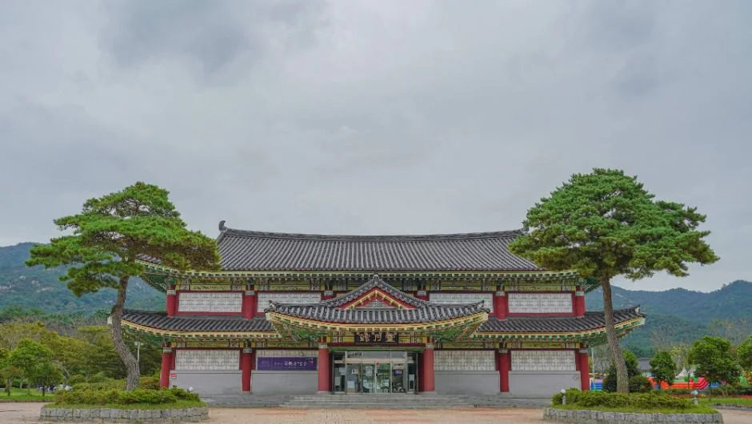
▲ 왕인박사유적지의 대표 사진으로 소개되는 전각형 건물. 초록이 짙고 흐린 날의 사진이다 ⓒ 한국관광공사 · 공공누리 제1유형
"월출산 기찬랜드, 겨울에 가도 되나요? 왕인박사유적지는 입장료가 있나요?" 영암 월출산 아래 코스를 겨울에 잡으려는 사람이 가장 먼저 부딪히는 질문이다. 이 글은 2026년 10월 20일 기준으로 한국관광공사 대한민국 구석구석(TourAPI) 정보를 바탕으로 왕인박사유적지와 그 인근 시설의 운영·주차·휴관을 정리했다. 대한민국 구석구석 바로가기
결론부터 말하면 기찬랜드의 물놀이장은 여름철 한시 운영이라 겨울에는 열지 않는다. 겨울에 갈 곳은 기찬랜드 안의 실내 박물관·기념관과 6.5km쯤 떨어진 구림마을 권역이다. 월출산 구름다리 등산은 따로 정리한 기사가 있어 이 글에서는 링크로만 잇는다.
💡 먼저 결론
왕인박사유적지는 한국관광공사 정보상 연중무휴, 입장료 무료, 야외 시설 상시 개방, 전시관 09:00~18:00이다. 월출산 기찬랜드 물놀이장은 "여름철 한시 운영"이라 겨울에는 이용할 수 없다. 영암도기박물관은 무료이고 월요일에 쉰다. 영암곤충박물관은 월요일 휴관에 입장료가 있다. 모두 한국관광공사 정보 기준이므로 방문 전 확인이 필요하다.
1. 먼저 바로잡기 — 기찬랜드는 겨울에 물놀이장이 아니다
한국관광공사는 월출산 기찬랜드를 월출산 계곡물을 활용한 자연형 풀장 물놀이장으로 소개하고, 이용 시기를 "여름철 한시 운영"으로 적었다. 같은 정보에 이용시간은 09:00~18:00(실내 물놀이장 10:00~17:00), 휴무는 "이용기간 내 무휴"로 되어 있다. 즉 이용 기간 자체가 여름이다. 겨울에 풀장을 기대하고 가면 안 된다.
다만 기찬랜드 구역에는 물놀이장 말고도 영암곤충박물관과 가야금산조기념관이 있다고 안내된다. 두 곳의 겨울 개관 여부와 시간은 아래 표에 정리했다. 운영 주체인 영암문화관광재단 안내는 영암문화관광재단 바로가기에서 확인할 수 있다.
| 시설 | 겨울 이용 | 핵심 정보 |
|---|---|---|
| 왕인박사유적지 | 가능 | 연중무휴, 야외 상시 개방, 전시관 09:00~18:00, 무료 |
| 영암 왕인박사마을 | 가능 | 연중무휴, 상시 개방, 주차 가능 |
| 영암도기박물관 | 가능 | 09:00~18:00(입장 마감 17:30), 월요일·1월 1일·설·추석 휴관, 무료 |
| 영암곤충박물관(기찬랜드) | 가능(요금 있음) | 평일 10:00~17:00, 주말 10:00~18:00, 월요일 휴관 |
| 가야금산조기념관(기찬랜드) | 가능 | 10:00~17:00, 무료, 월요일 등 휴관 |
| 월출산 기찬랜드 물놀이장 | 불가(여름 한시) | 09:00~18:00, 이용기간 내 무휴 |
▲ 왕인박사유적지의 대표 사진으로 소개되는 전각형 건물. 초록이 짙고 흐린 날의 사진이다. ⓒ 한국관광공사 · 공공누리 제1유형
2. 왕인박사유적지 — 무엇이 있고 어떻게 운영되나
왕인박사유적지는 구림마을 동쪽 문필봉 기슭에 있다. 한국관광공사는 이곳을 왕인묘, 내삼문, 외삼문, 문산재, 양사재, 전시관, 왕인상, 책굴 등으로 이루어진 곳으로 소개한다. 왕인묘에는 영정과 위패를 모시고 해마다 제사를 지내며, 책굴은 왕인이 학문을 닦을 때 썼다고 전해지는 석굴이다. 성기동은 1986년 6월 23일 국민관광지로 개발됐다고 한다. 주소는 영암군 군서면 왕인로 440이다.
운영 정보는 한국관광공사 기준으로 연중무휴이고, 야외 시설은 상시 개방, 전시관만 09:00~18:00다. 입장료는 무료, 주차는 "가능"으로 표기돼 있고 화장실이 있다. 문의 전화는 061-470-6643이다. 영암군 누리집에서는 이 시설의 운영시간·주차 요금 안내를 찾지 못했다. 영암군 관광 안내 바로가기
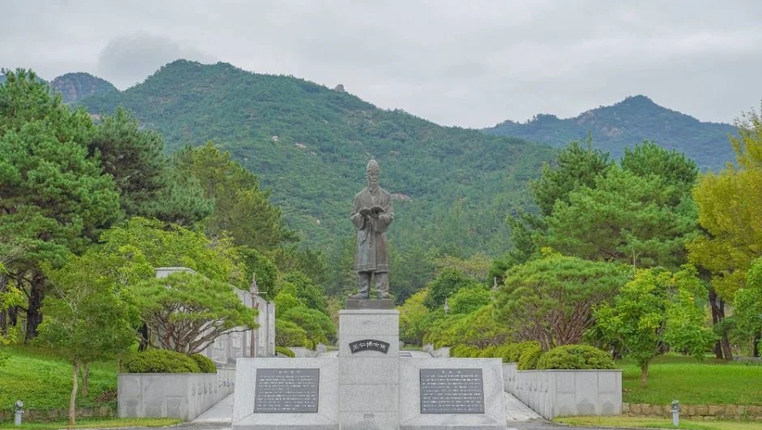
▲ 왕인박사상으로 보이는 동상과 뒤편 산자락. 초록이 짙은 계절의 사진이다. ⓒ 한국관광공사 · 공공누리 제1유형
| 항목 | 내용 | 비고 |
|---|---|---|
| 주소 | 영암군 군서면 왕인로 440 | — |
| 운영 | 연중무휴, 야외 상시 개방, 전시관 09:00~18:00 | 겨울 단축 여부는 확인하지 못함 |
| 입장료 | 무료 | 2026-10-20 기준 한국관광공사 TourAPI 입장료 항목 "무료". 일부 외부 사이트에는 어른 1,000원 등 옛 요금표가 남아 있어 영암군 공식 확인은 하지 못함 |
| 주차 | 가능 | 주차면 수·요금은 확인하지 못함 |
| 문의 | 061-470-6643 | — |
| 문화유산 지정 | 1976년 9월 30일 전라남도 기념물 제20호로 지정(국가유산포털 기록) | 2021년 11월 19일부터 지정번호를 표기하지 않는 방식으로 바뀌어 현재는 번호 없이 시도기념물 "왕인박사유적"으로 표기된다. 행정구역 통합 뒤에는 전남광주통합특별시 기념물로 올라 있다 |
▲ 넓은 계단 통로 옆으로 이어진 석벽 패널. 어떤 구간인지는 자료에 명시돼 있지 않다. ⓒ 한국관광공사 · 공공누리 제1유형
3. 안쪽 둘러보기 — 전시관과 전각들
전시관에는 왕인의 탄생도, 수학도, 도일도, 학문전수도가 걸려 있다고 공식 소개된다. 일본으로 건너간 이야기를 그림으로 풀어낸 공간이라 설명을 읽으며 걷는 코스에 어울린다. 야외 구역은 상시 개방이지만 전시관만 시간이 정해져 있으므로, 겨울 해가 짧은 날에는 전시관을 먼저 보고 야외를 도는 편이 안전하다.
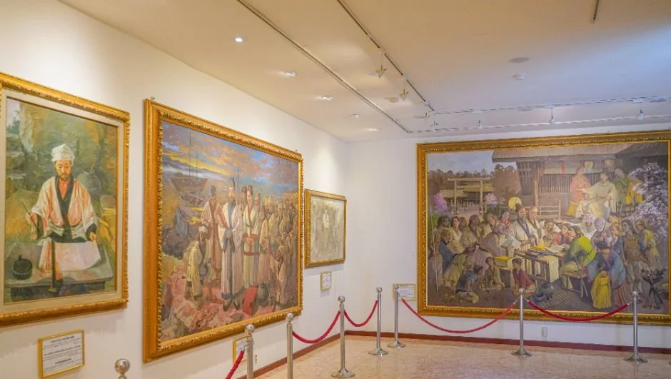
▲ 전시 공간에 걸린 대형 그림들. 공식 소개는 전시관에 탄생도·수학도·도일도·학문전수도가 걸려 있다고 한다. ⓒ 한국관광공사 · 공공누리 제1유형
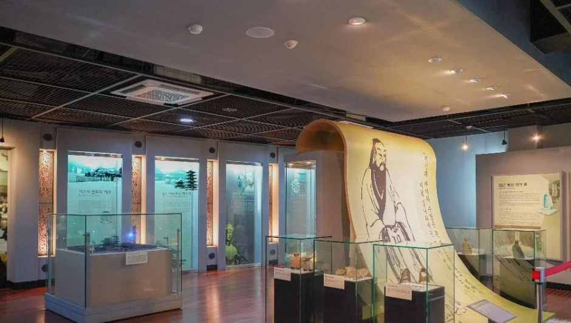
▲ 진열장과 두루마리 모양 전시물이 있는 전시 공간. 어느 전시실인지는 자료에 없다. ⓒ 한국관광공사 · 공공누리 제1유형
야외에는 붉은 기둥의 문과 계단 진입로, 잔디 위의 비석이 있는 구역이 이어진다. 이 사진들이 각각 외삼문·내삼문·왕인묘 가운데 어디인지는 자료에 명시돼 있지 않아 캡션에 단정하지 않았다.
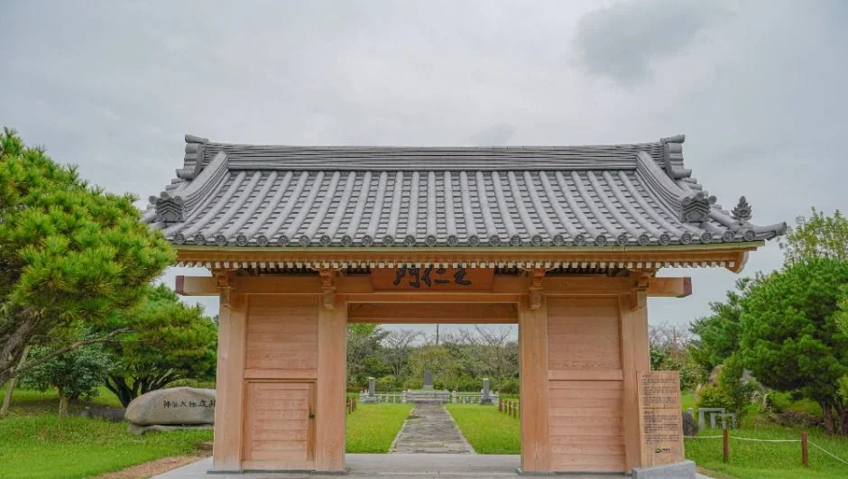
▲ 유적지 안의 목조 대문형 건물. 정확한 명칭은 자료에 없다. 흐린 날의 사진이다. ⓒ 한국관광공사 · 공공누리 제1유형
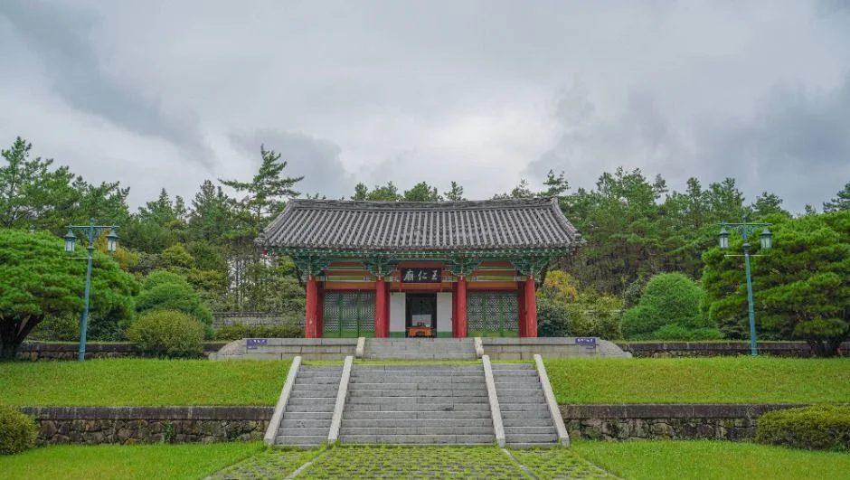
▲ 잔디 사이 진입로와 계단 끝의 전각. 흐린 날의 사진이다. ⓒ 한국관광공사 · 공공누리 제1유형
4. 가까운 구림마을 — 왕인박사마을과 도기박물관
왕인박사유적지에서 구림마을 권역은 가깝다. 좌표 기준 직선거리로 영암 왕인박사마을은 0.7km, 영암도기박물관은 1.2km쯤이다. 실제 도로 거리는 확인하지 못했다. 한국관광공사는 왕인박사마을을 전통 기와집과 정자, 흙담이 남은 마을로 소개하며 한옥 민박 100여 채가 있다고 적는다. 상시 개방, 연중무휴, 주차 가능으로 표기돼 있다.
영암도기박물관은 구림도기가마터와 영암 도기문화를 소개하는 박물관이다. 한국관광공사 정보로 09:00~18:00(입장 마감 17:30), 월요일·1월 1일·설날·추석에 쉬고, 관람은 무료이며 체험료는 별도다. 주차료도 무료로 표기돼 있다. 문의는 061-470-6851~3이다.
| 시설 | 시간·휴무 | 요금·주차 | 유적지에서 직선거리 |
|---|---|---|---|
| 영암 왕인박사마을 | 상시 개방, 연중무휴 | 주차 가능, 유모차 불가로 표기 | 약 0.7km |
| 영암도기박물관 | 09:00~18:00, 입장 마감 17:30, 월요일·1/1·설·추석 휴관 | 관람 무료(체험료 별도), 주차 무료 | 약 1.2km |
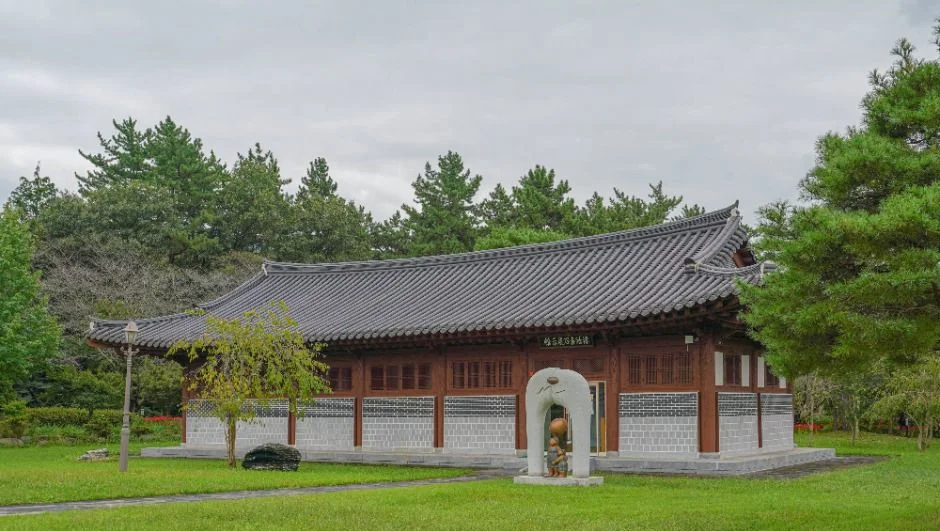
▲ 잔디밭 너머의 긴 한옥 건물. 유적지 구역의 전각으로 보이나 정확한 명칭은 자료에 없다. ⓒ 한국관광공사 · 공공누리 제1유형
5. 기찬랜드 안 겨울 코스 — 곤충박물관·가야금산조기념관
기찬랜드는 영암읍에 있고, 왕인박사유적지에서 좌표 기준 직선으로 6.5km 안팎이다. 곤충박물관은 한국관광공사 정보상 28개월~성인 8,000원, 영암군민·65세 이상 6,000원이며 주차는 무료다. 평일은 10:00~17:00(입장 마감 16:00), 주말은 10:00~18:00(입장 마감 17:00), 매주 월요일에 쉰다. 문의는 0507-1371-4300이다.
가야금산조기념관은 같은 정보에서 이용시간 10:00~17:00, 무료다. 영암군 관광 안내 페이지에는 같은 주소(기찬랜드로 19-10)에 "가야금산조테마공원"(061-471-8500)으로 소개돼 있어 이름이 두 가지로 쓰인다. 휴관일은 한국관광공사 두 항목에서 "매주 월요일, 공휴일과 국경일"과 "월요일·1월 1일·설·추석·근로자의 날"로 서로 달라 하나로 단정하지 않는다. 겨울에 공휴일이 걸린다면 전화(061-471-8500)로 확인하자. 일부 블로그가 적은 곤충박물관 월별 시간은 공식 확인이 안 돼 쓰지 않았다.
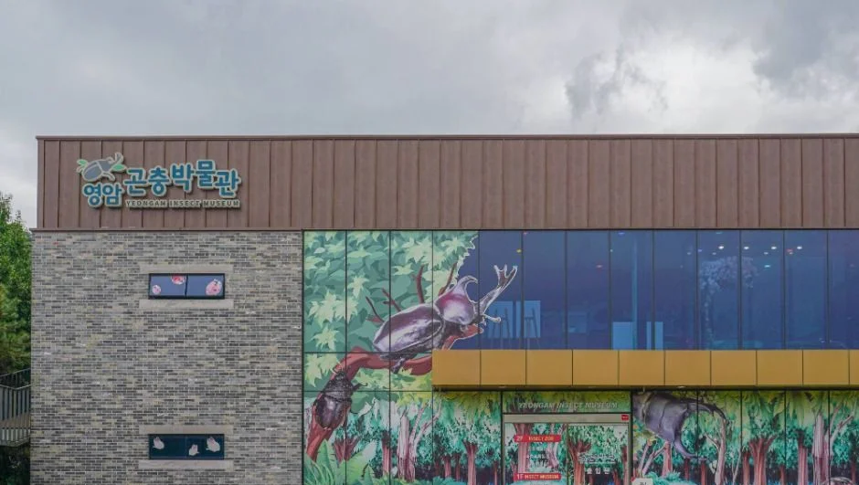
▲ 영암곤충박물관 외관. 외벽에 큰 곤충 그림이 그려져 있다. ⓒ 한국관광공사 · 공공누리 제1유형
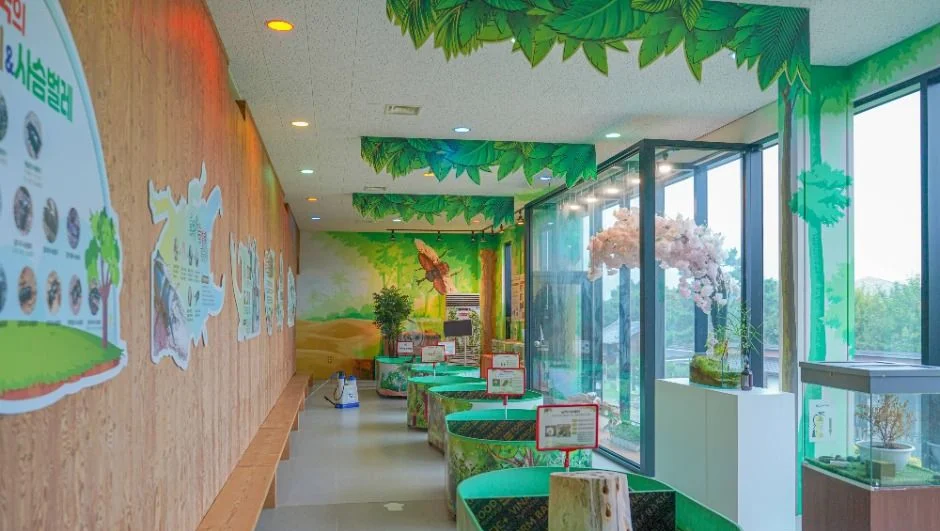
▲ 곤충박물관 실내 전시 공간. 유리 사육장과 벽면 전시가 이어진다. ⓒ 한국관광공사 · 공공누리 제1유형
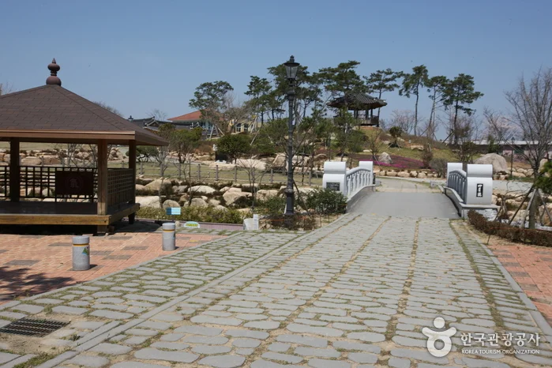
▲ 기찬랜드 안 정자와 돌길 산책로. 촬영 시기는 자료에 없다. 사진=한국관광공사 · 공공누리 제3유형(변경 없이 사용)
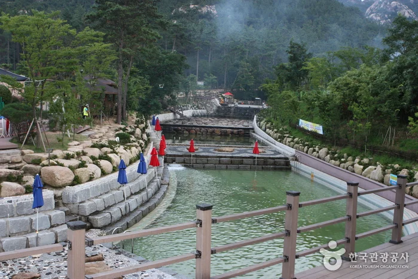
▲ 월출산 기찬랜드 물놀이장. 여름철 한시 운영 시설이며 사람이 많은 여름 시기의 사진으로 보인다. 사진=한국관광공사 · 공공누리 제3유형(변경 없이 사용)
6. 월출산 연계와 하루 동선
월출산 구름다리·천황봉·도갑사는 월출산 구름다리 가을 기사에 정리돼 있어 여기서는 겹치지 않게 다루지 않는다. 영암 무화과축제 때의 인근 동선은 영암무화과축제 프로그램 기사에서 짧게 소개했다. 이 글은 겨울 개관 여부와 시설 운영 정보에 초점을 맞췄다.
| 순서 | 할 일 | 체크 |
|---|---|---|
| 오전 | 왕인박사유적지 야외 산책 | 전시관 09:00 개관 |
| 점심 전후 | 왕인박사마을·영암도기박물관 | 도기박물관 월요일 휴관 |
| 오후 | 기찬랜드 곤충박물관 또는 가야금산조기념관 | 평일 곤충박물관 입장 16:00 마감, 기념관 17:00 종료 |
| 선택 | 월출산 구름다리 등산 | 겨울 기상·탐방로 상황은 국립공원 안내 확인 |
월요일에는 도기박물관·곤충박물관·가야금산조기념관이 모두 쉬므로 이 동선은 화~일요일에 맞춰야 한다. 반딧불이 탐사 같은 야간 행사는 2026년 9월 19~20일에 왕인박사유적지에서 열린 것이 언론에 보도됐고, 겨울에 같은 행사가 있는지는 확인하지 못했다.
주변 전남 코스는 진도 운림산방 세방낙조 겨울 드라이브 기사와 해남 달마산 도솔암 기사도 참고할 만하다.
가을 끝자락에는 같은 기찬랜드에서 꽃 행사가 열린다. 한국관광공사 정보에 따르면 2026 월출산 국화축제는 월출산 기찬랜드에서 2026년 10월 30일부터 11월 15일까지, 10:00~18:00에 열리고 입장은 무료다. 국화 23종 20만여 점과 국화 조형물을 전시하고 꽃길·억새 포토존, 영암 농특산물 판매관을 운영한다고 안내된다(문의 영암군 061-470-2259, 한국관광공사 정보 2026년 10월 12일 수정본 기준). 물놀이장은 닫혀 있어도 기찬랜드 곤충박물관 같은 실내 시설과 이 행사를 묶으면 늦가을~초겨울 코스가 된다. 행사 기간에는 평소와 달리 붐빌 수 있으므로 일정은 영암군에 다시 확인하자.
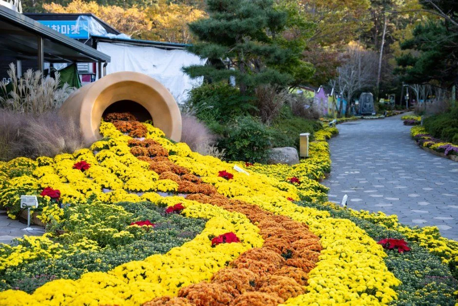
▲ 국화로 꾸민 꽃길. 한국관광공사가 2026 월출산 국화축제 사진으로 올린 것이다. 사진=한국관광공사 · 공공누리 제3유형(변경 없이 사용)
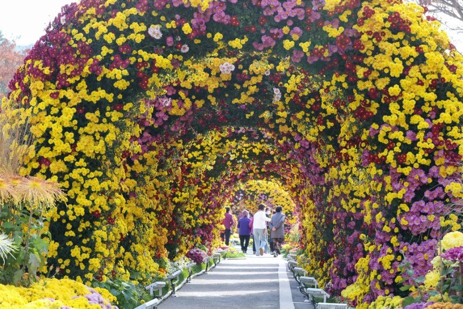
▲ 국화 터널. 같은 축제 사진이다. 사진=한국관광공사 · 공공누리 제3유형(변경 없이 사용)
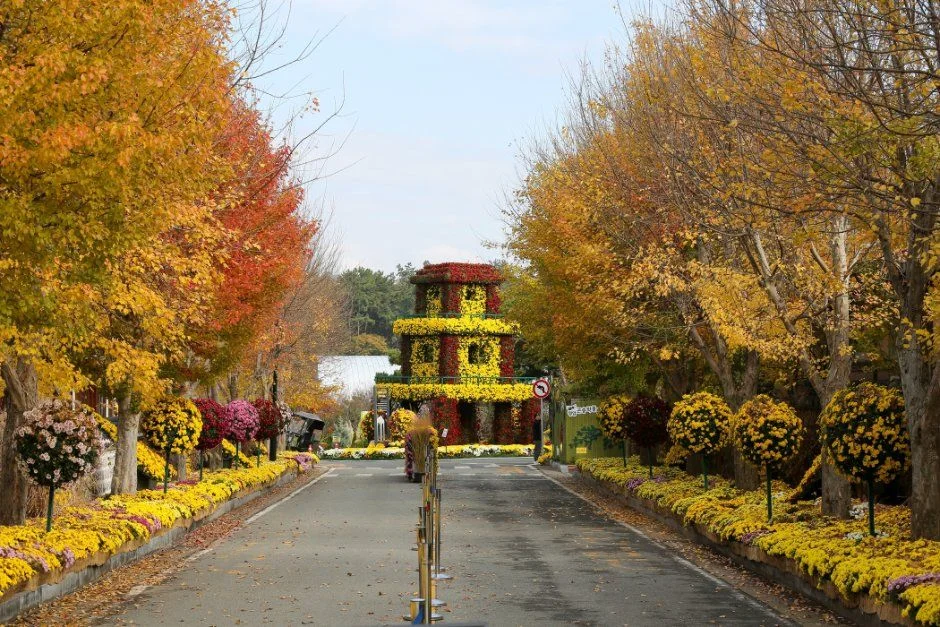
▲ 은행나무로 보이는 가로수가 노랗게 물든 진입로. 축제 사진이며 가을 풍경이다. 사진=한국관광공사 · 공공누리 제3유형(변경 없이 사용)
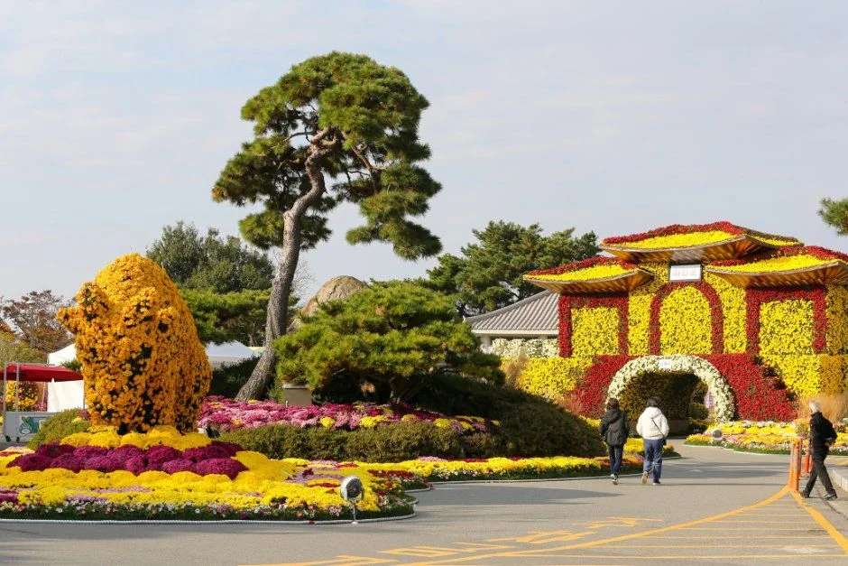
▲ 국화 조형물 구역. 축제 전시물 사진이다. 사진=한국관광공사 · 공공누리 제3유형(변경 없이 사용)
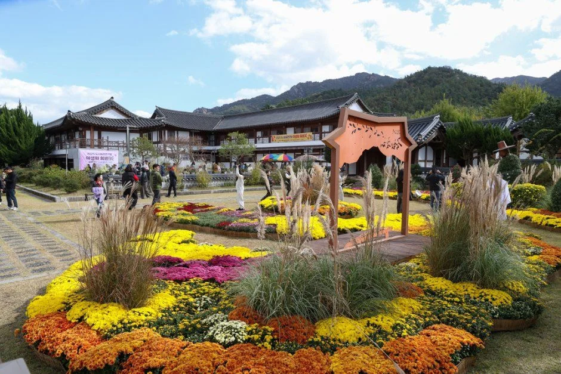
▲ 한옥 건물 앞 국화·억새 꽃밭. 한국관광공사가 2026 월출산 국화축제 사진으로 올린 것이다. 사진=한국관광공사 · 공공누리 제3유형(변경 없이 사용)
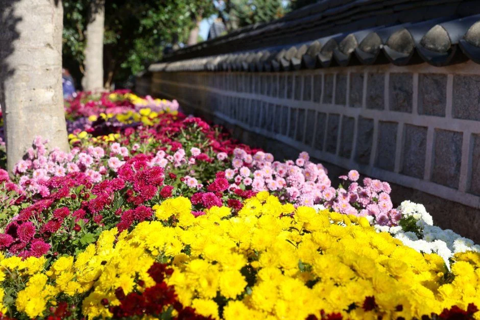
▲ 담장을 따라 이어진 국화 꽃길. 같은 축제 사진이다. 사진=한국관광공사 · 공공누리 제3유형(변경 없이 사용)
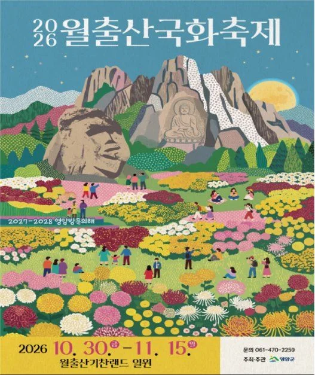
▲ 2026 월출산 국화축제 공식 포스터. 포스터에 10월 30일~11월 15일 일정이 적혀 있다. 사진=한국관광공사 · 공공누리 제3유형(변경 없이 사용)
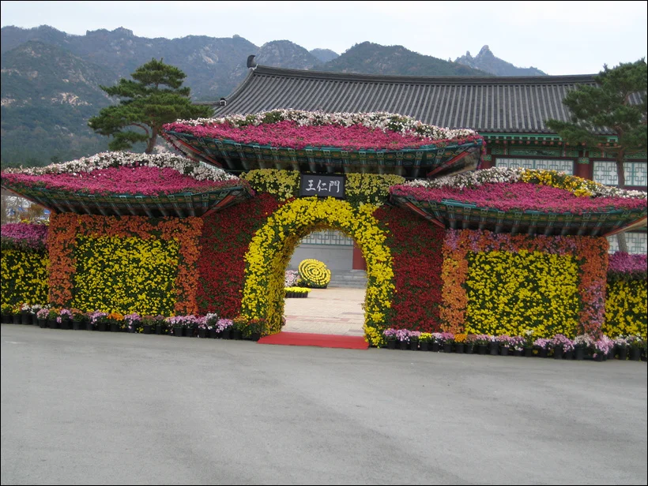
▲ 2009년 11월 16일 촬영된 영암 왕인 국화축제 조형물(당시 행사명). 올해 행사의 모습과는 다르다. ⓒ 위키미디어 커먼스 Korea.net · CC BY-SA 2.0
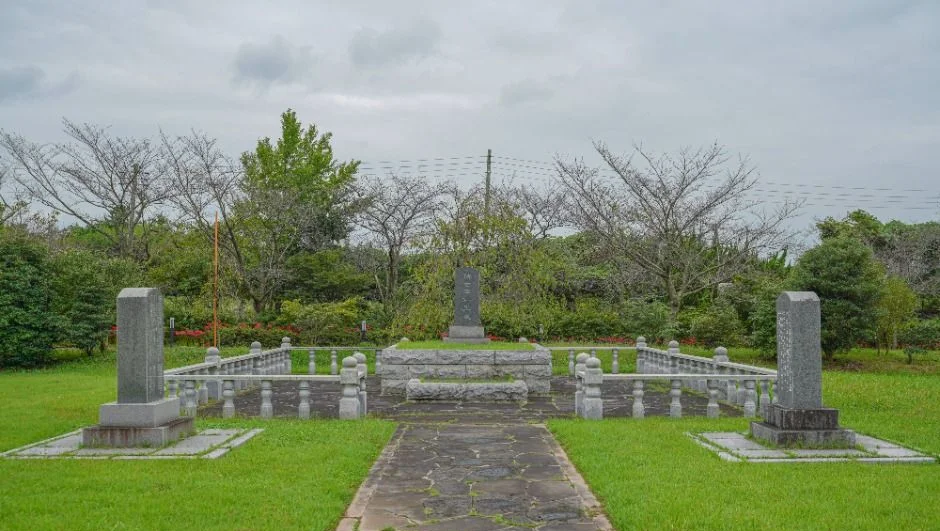
▲ 잔디밭 위의 석단과 비석이 있는 구역. 명칭은 자료에 없다. ⓒ 한국관광공사 · 공공누리 제1유형
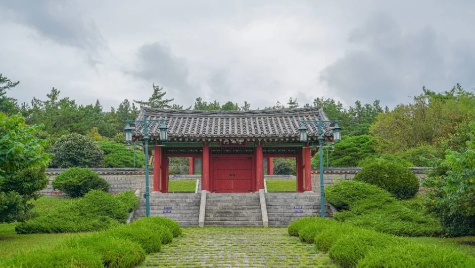
▲ 푸른 잔디와 계단 위의 붉은 문. 정확한 명칭은 자료에 없다. ⓒ 한국관광공사 · 공공누리 제1유형
✅ 출발 전 체크
1) 기찬랜드 물놀이장은 여름 한시 운영이라 겨울에는 이용 불가 2) 왕인박사유적지는 연중무휴·무료, 전시관만 09:00~18:00 3) 도기박물관·곤충박물관·가야금산조기념관은 월요일 휴관 4) 요금·휴관일은 한국관광공사 정보 기준이므로 방문 전 전화 확인 5) 왕인박사유적지·곤충박물관 사진은 초록이 짙은 계절의 것이라 겨울 풍경과 다르다. 6) 월출산 국화축제는 10월 30일~11월 15일(한국관광공사 정보), 일정은 영암군에 확인.
7. 정리
왕인박사유적지는 연중무휴·무료에 전시관 09:00~18:00이고, 기찬랜드 물놀이장은 여름철 한시 운영이라 겨울에는 이용할 수 없다. 겨울에는 구림마을의 왕인박사마을·영암도기박물관과 기찬랜드 안 곤충박물관·가야금산조기념관을 엮어 돌면 된다. 박물관류는 월요일에 쉰다.
유적지 주차면 수·요금, 겨울철 단축 운영, 가야금산조기념관의 정확한 휴관일, 구림~기찬랜드 도로 거리는 확인하지 못했다. 이 기사는 2026년 10월 20일 기준이므로 방문 전 영암군 문화관광 담당(061-470-2114)에 확인하자.